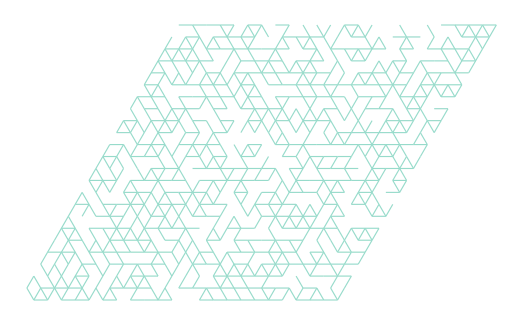

Where collagen ages matters.
Explore how collagen density, AGE/LOX crosslinks, fibronectin–TG2 reinforcement, and oxidative damage redistribute forces around a contracting cell. Viscoelasticity, frequency response and a deliberately uncalibrated FAK–YAP mechanosignaling proxy are computed from a passive two-protein spring network.
1 · Stress relaxation at cell contacts
A fixed cell contraction is applied. Maxwell-like internal variables cause local force redistribution and mechanical relaxation.
2 · The cell's 12 adhesion sites
Circle area scales with late force at each modeled adhesion. Front faces right. The illustrated geometry is planar, not a cell reconstruction.
3 · Crosslink location versus mechanosignaling
Bars compare spatial YAP proxies across different regions for the same density, chemistry and seed. Bulk stiffness can remain similar while local mechanosensing changes.
4 · What a bulk-only model would miss
Spatial, site-averaged, and traction-permuted controls all use the same illustrative signaling equations. Site polarity and receptor weighting are hypotheses, not fitted biology.
Assumptions and scientific next steps
Collagen I and fibronectin are separate elastic/viscoelastic fiber graphs, coupled through effective protein interactions. LOX- and AGE-like modifications are permanent-biased springs, fibronectin–TG2 adds effective links, oxidative damage weakens collagen fibers, and the 4-HNE arm weakens a subset of fibronectin fibers and some integrin-site parameters. Reactive chemistry is not simulated. Test predictions against AFM microrheology near cells, experimental traction-force microscopy, dynamic rheometry, and matched-stiffness FAK/YAP microscopy before making biological claims.
Jamming-and-aging research note · Weak-bond stress relaxation in collagen · Pericellular heterogeneity · TG2/fibronectin mechano-regulation.
Same initial stiffness.
Different relaxation.
Compare uniform and spatially clustered fiber networks after matching their initial bulk shear stiffness. Explore the saved seed pairs, the uncertainty in their difference, and how the result depends on the assumed mechanics.
r is the persistent fraction of axial elasticity; β controls the strain sensitivity of relaxation. These settings are effective assumptions, not measured properties of named crosslink chemistries.
Every included seed pair
How uncertain is the difference?
Uniform dilution

Clustered connectivity
Saved seed-0 topologies, shown undeformed. Periodic edges crossing the displayed cell boundary are omitted from the drawing.
Inspect included and excluded pairs
Excluded values remain visible for audit but do not enter the charts or paired means. Changing outcomes can change the included set because initial-state and full-hold convergence use different flags.
| Seed | Uniform | Clustered | Difference | Selection |
|---|
What matching stiffness means here
Each specimen is scaled by its relaxed initial secant shear modulus G₀ at shear strain 0.001. This compensates microscopic modulus; it does not isolate architecture while holding fiber stiffness fixed.
Networks are equilibrated to 10% shear with sliding frozen, then held for five internal time units with rupture disabled. RMS segment strain is measured at the beginning of the hold.
Exact negative control: scaling every energy term by the same relaxation function gives identical normalized retention for both architectures: 50.34% at time five. The differences above depend on selective axial relaxation with elastic bending.
What the evidence supports
The higher-κ retention difference persists at both tested sizes. The primary lower-κ interval spans zero, and the primary RMS-strain comparison gives no consistent architecture ordering.
Hold refinement changed retention by less than 0.009 percentage points on shared complete cases; the initial loading ramp was not step-refined. Displacement nonaffinity differed by up to 60.5% between solvers, so it is not offered as a robust outcome here.
Later fracture paths remain resolution-sensitive. These comparisons do not establish a toughness or ultimate-strength winner, a named chemical effect, or a YAP/tissue prediction.
Data provenance, uncertainty and downloads
The charts reproduce 32 saved comparisons from the published summary workbook and matching CSV files: two sizes, two κ settings, four mechanisms and two outcomes. Only the improved-optimizer primary and larger hold batches are used. No new simulations or bootstrap intervals were generated for this explorer.
Intervals are the archived 2,000-resample paired-bootstrap bounds. Some bounds in the article’s narrative table differ slightly from the published workbook; this explorer uses the workbook/CSV values consistently. At the default setting, the interval is −3.98 to −1.48 percentage points.
Only pairs with both required convergence flags enter each contrast. Complete-case selection can affect the estimates; the size check is not an infinite-size limit. Across the full study, 1,600 saved trajectories include repeated mechanisms, solvers and refinements; they correspond to 50 distinct graph realizations, not 1,600 independent specimens.
Download displayed comparisons (CSV) · Download hold cases and flags (CSV) · Source checksums
Published summary workbook · Full H100 article and five data/source workbooks · Big-picture synthesis
↑ Back to the original adhesion explorer · Open the unchanged original HTML
What changes when collagen slides?
All 36 explicit-water loading cycles completed; none passed the declared stiffness-transfer checks. Compare the measured force histories, native-crosslink references and uncertainty below. New cell-adhesion force calibration is withheld.
Each molecular cycle starts with 50 ps at zero commanded displacement, ramps to 0.04 nm, holds 20 ps, reverses, then recovers 20 ps. Three velocity seeds share one prepared pose and solvent build per model. The slower protocol tests rate dependence; neither protocol is an equilibrium free-energy calculation.
Measured force through a complete cycle
Uncertainty across the saved replicas
From a molecular coupon to a cell-shaped cavity
Loading the saved network experiment…
Uniform placement · assumed geometry
Clustered beside one cell pole · assumed geometry
Orange segments identify modified junctions and white dots identify adhesion sites in the assumed lattice. When a molecular pair passes, arrows show simulated adhesion reaction vectors under prescribed radial contraction; arrow magnitudes are normalized within the displayed map. Only molecular inputs passing the declared positive-slope, slip-span and fit-quality checks enter the network. Excluded inputs are not replaced by fitted values. Stiffness matching rescales the entire linked-network Hessian to the corresponding control’s bulk shear stiffness.
Methods, controls, transfer gates, and limits
The molecular systems use the inherited Amber99/ColBuilder terms, explicit TIP3P water and a requested 0.15 M salt concentration plus neutralizing ions. A centroid spring of 5000 kJ mol⁻¹ nm⁻² drives relative axial displacement; a 1000 kJ mol⁻¹ nm⁻² transverse spring maintains the reference lateral offset. Dynamics use 310 K, a 1 fs step and NVT conditions. Initial minimization, CPU/reference–CUDA comparisons, force-sign finite differences, finite-value, constraint and tracked stereochemistry checks precede acceptance. Preparation and trajectory failures are retained.
The apparent force–slip slope is estimated using commanded displacement as an instrument, avoiding the artificial negative correlation introduced by regressing the spring force directly on its thermally fluctuating slip. Transfer requires positive slope, at least 0.015 nm observed slip span, and force-versus-command R² above 0.3. These checks select protocol-responsive inputs; they do not certify equilibrium or physical parameter accuracy.
The network uses a diluted triangular lattice, explicit linear bending, and series fiber/junction elements. Junctions are assigned uniformly or clustered at the right-hand cavity pole at identical counts. Twelve graph seeds and three mapping scales expose geometry and mapping sensitivity. The cell boundary contracts by 0.04 lattice units. Units and junction abundance remain assumed, so the force outputs are normalized.
Ordinary-lysine native controls are fully rebuilt residues with their own charges and exclusions. Free hydroxylysine parameters were unavailable in the source set; these controls are not hydroxylation-matched precursors. Glucosepane changes the inherited solute charge by approximately two elementary charges. Native and AGE coupons differ in context and valence. Fixed-topology MD does not simulate formation or cleavage. Three velocity seeds are not three independent conformational ensembles. Native-case raw solvation labels contain a legacy CHARMM label; static execution-path inspection confirms Amber99/ColBuilder solute terms and amber14/tip3p.xml solvent parameters in all cases. The metadata erratum preserves this correction without changing raw files.
Data, source, and excluded calculations
Download displayed molecular curves and summaries (JSON)
Download network outcomes, force vectors and exclusions (JSON)
Download network outcomes (CSV)
Download simulation and analysis source (ZIP)
Download published-benchmark readiness and archive checksums
Download source and result checksums